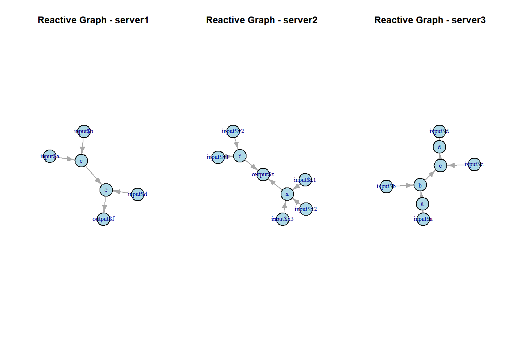
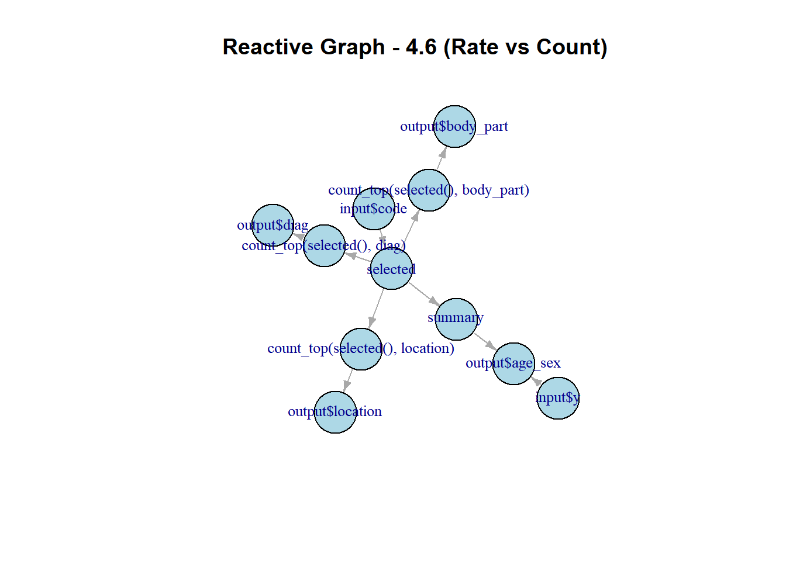
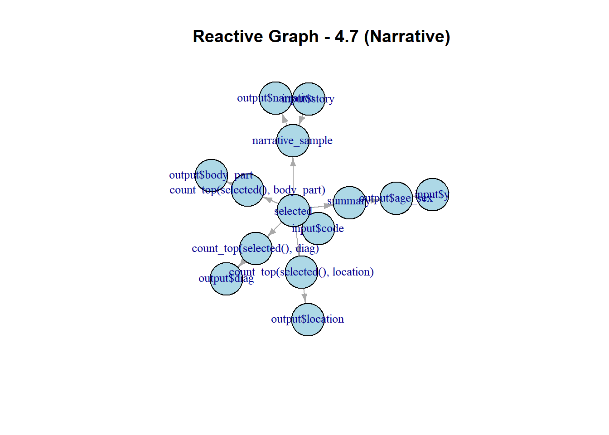

library(shiny)
ui <- fluidPage(
plotOutput("plot", width = "700px", height = "300px")
)
server <- function(input, output, session) {
output$plot <- renderPlot(plot(1:5), res = 96)
}Shiny
Some parts of this assignment are referenced from GPT content.
1.1 Hadley_2 is more efficient than the first one because it includes a reactive expression.
2.3.5.1 Which of textOutput() and verbatimTextOutput() should each of the following render functions be paired with?
renderPrint(summary(mtcars)) —– verbatimTextOutput() renderText(“Good morning!”) —– textOutput() renderPrint(t.test(1:5, 2:6)) —– verbatimTextOutput() renderText(str(lm(mpg ~ wt, data = mtcars))) —–textOutput()
2.3.5.2 Re-create the Shiny app from Section 2.3.3, this time setting height to 300px and width to 700px. Set the plot “alt” text so that a visually impaired user can tell that its a scatterplot of five random numbers.
2.3.5.3 Update the options in the call to renderDataTable() below so that the data is displayed, but all other controls are suppressed (i.e., remove the search, ordering, and filtering commands). You’ll need to read ?renderDataTable and review the options at https://datatables.net/reference/option/.
ui <- fluidPage(
dataTableOutput("table")
)`shiny::dataTableOutput()` is deprecated as of shiny 1.8.1.
Please use `DT::DTOutput()` instead.
Since you have a suitable version of DT (>= v0.32.1), shiny::dataTableOutput() will automatically use DT::DTOutput() under-the-hood.
If this happens to break your app, set `options(shiny.legacy.datatable = TRUE)` to get the legacy datatable implementation (or `FALSE` to squelch this message).
See <https://rstudio.github.io/DT/shiny.html> for more information.server <- function(input, output, session) {
output$table <- renderDataTable(
mtcars,
options = list(
searching = FALSE,
ordering = FALSE,
paging = TRUE,
pageLength = 5
)
)
}
shinyApp(ui, server)2.3.5.4 Alternatively, read up on reactable, and convert the above app to use it instead.
library(shiny)
library(reactable)
ui <- fluidPage(
reactableOutput("table")
)
server <- function(input, output, session) {
output$table <- renderReactable({
reactable(
mtcars,
searchable = FALSE,
sortable = FALSE,
pagination = TRUE,
defaultPageSize = 5
)
})
}
shinyApp(ui, server)3.3.6.1
ui <- fluidPage(
textInput("name", "What's your name?"),
textOutput("greeting")
)
server1 <- function(input, output, session) {
output$greeting <- renderText({
paste0("Hello ", input$name)
})
}
shinyApp(ui, server1)ui <- fluidPage(
textInput("name", "What's your name?"),
textOutput("greeting")
)
server2 <- function(input, output, session) {
output$greeting <- renderText({
paste0("Hello ", input$name)
})
}
shinyApp(ui, server2)ui <- fluidPage(
textInput("name", "What's your name?"),
textOutput("greeting")
)
server3 <- function(input, output, session) {
output$greeting <- renderText({
paste0("Hello ", input$name)
})
}
shinyApp(ui, server3)3.3.6.2
if (!requireNamespace("igraph", quietly = TRUE)) install.packages("igraph")
library(igraph)
Attaching package: 'igraph'The following objects are masked from 'package:stats':
decompose, spectrumThe following object is masked from 'package:base':
unionedges_server1 <- c("input$a", "c",
"input$b", "c",
"c", "e",
"input$d", "e",
"e", "output$f")
edges_server2 <- c("input$x1", "x",
"input$x2", "x",
"input$x3", "x",
"x", "output$z",
"input$y1", "y",
"input$y2", "y",
"y", "output$z")
edges_server3 <- c("input$a", "a",
"a", "b",
"input$b", "b",
"b", "c",
"input$c", "c",
"c", "d",
"input$d", "d")
plot_reactive_graph <- function(edges, title) {
g <- graph(edges, directed = TRUE)
plot(g,
vertex.color = "lightblue",
vertex.size = 30,
vertex.label.cex = 0.8,
edge.arrow.size = 0.5,
main = title)
}
par(mfrow = c(1, 3))
plot_reactive_graph(edges_server1, "Reactive Graph - server1")
plot_reactive_graph(edges_server2, "Reactive Graph - server2")
plot_reactive_graph(edges_server3, "Reactive Graph - server3")
3.3.6.3 var() and range() are base R functions. If you define reactives with these names, they will overwrite the base functions, leading to conflicts or errors. For example, in range(var(), na.rm = TRUE), the reactive range() will be called instead of the base R function range(), resulting in an error.
4.8.1
edges_4_6 <- c("input$code", "selected",
"selected", "count_top(selected(), diag)",
"selected", "count_top(selected(), body_part)",
"selected", "count_top(selected(), location)",
"selected", "summary",
"count_top(selected(), diag)", "output$diag",
"count_top(selected(), body_part)", "output$body_part",
"count_top(selected(), location)", "output$location",
"summary", "output$age_sex",
"input$y", "output$age_sex")
g_4_6 <- graph(edges_4_6, directed = TRUE)
plot(g_4_6,
vertex.color = "lightblue",
vertex.size = 30,
vertex.label.cex = 0.8,
edge.arrow.size = 0.5,
main = "Reactive Graph - 4.6 (Rate vs Count)")
edges_4_7 <- c("input$code", "selected",
"selected", "count_top(selected(), diag)",
"selected", "count_top(selected(), body_part)",
"selected", "count_top(selected(), location)",
"selected", "summary",
"count_top(selected(), diag)", "output$diag",
"count_top(selected(), body_part)", "output$body_part",
"count_top(selected(), location)", "output$location",
"summary", "output$age_sex",
"input$y", "output$age_sex",
"input$story", "narrative_sample",
"selected", "narrative_sample",
"narrative_sample", "output$narrative")
g_4_7 <- graph(edges_4_7, directed = TRUE)
plot(g_4_7,
vertex.color = "lightblue",
vertex.size = 30,
vertex.label.cex = 0.8,
edge.arrow.size = 0.5,
main = "Reactive Graph - 4.7 (Narrative)")
4.8.2 If you flip fct_infreq() and fct_lump():
Original order (fct_lump() -> fct_infreq()): First lumps rare levels together, then orders the remaining levels by frequency. Flipped order (fct_infreq() -> fct_lump()): Orders all levels by frequency first, then lumps the less frequent ones together.
dir.create("neiss")Warning in dir.create("neiss"): 'neiss' already exists#> Warning in dir.create("neiss"): 'neiss' already exists
download <- function(name) {
url <- "https://raw.github.com/hadley/mastering-shiny/main/neiss/"
download.file(paste0(url, name), paste0("neiss/", name), quiet = TRUE)
}
download("injuries.tsv.gz")
download("population.tsv")
download("products.tsv")4.8.3
library(vroom)
library(tidyverse)── Attaching core tidyverse packages ──────────────────────── tidyverse 2.0.0 ──
✔ dplyr 1.1.4 ✔ readr 2.1.5
✔ forcats 1.0.0 ✔ stringr 1.5.1
✔ ggplot2 3.5.1 ✔ tibble 3.2.1
✔ lubridate 1.9.3 ✔ tidyr 1.3.1
✔ purrr 1.0.2
── Conflicts ────────────────────────────────────────── tidyverse_conflicts() ──
✖ lubridate::%--%() masks igraph::%--%()
✖ dplyr::as_data_frame() masks tibble::as_data_frame(), igraph::as_data_frame()
✖ readr::col_character() masks vroom::col_character()
✖ readr::col_date() masks vroom::col_date()
✖ readr::col_datetime() masks vroom::col_datetime()
✖ readr::col_double() masks vroom::col_double()
✖ readr::col_factor() masks vroom::col_factor()
✖ readr::col_guess() masks vroom::col_guess()
✖ readr::col_integer() masks vroom::col_integer()
✖ readr::col_logical() masks vroom::col_logical()
✖ readr::col_number() masks vroom::col_number()
✖ readr::col_skip() masks vroom::col_skip()
✖ readr::col_time() masks vroom::col_time()
✖ readr::cols() masks vroom::cols()
✖ purrr::compose() masks igraph::compose()
✖ tidyr::crossing() masks igraph::crossing()
✖ readr::date_names_lang() masks vroom::date_names_lang()
✖ readr::default_locale() masks vroom::default_locale()
✖ dplyr::filter() masks stats::filter()
✖ readr::fwf_cols() masks vroom::fwf_cols()
✖ readr::fwf_empty() masks vroom::fwf_empty()
✖ readr::fwf_positions() masks vroom::fwf_positions()
✖ readr::fwf_widths() masks vroom::fwf_widths()
✖ dplyr::lag() masks stats::lag()
✖ readr::locale() masks vroom::locale()
✖ readr::output_column() masks vroom::output_column()
✖ readr::problems() masks vroom::problems()
✖ purrr::simplify() masks igraph::simplify()
ℹ Use the conflicted package (<http://conflicted.r-lib.org/>) to force all conflicts to become errorslibrary(forcats)
injuries <- vroom::vroom("neiss/injuries.tsv.gz")Rows: 255064 Columns: 10
── Column specification ────────────────────────────────────────────────────────
Delimiter: "\t"
chr (6): sex, race, body_part, diag, location, narrative
dbl (3): age, prod_code, weight
date (1): trmt_date
ℹ Use `spec()` to retrieve the full column specification for this data.
ℹ Specify the column types or set `show_col_types = FALSE` to quiet this message.population <- vroom::vroom("neiss/population.tsv")Rows: 170 Columns: 3
── Column specification ────────────────────────────────────────────────────────
Delimiter: "\t"
chr (1): sex
dbl (2): age, population
ℹ Use `spec()` to retrieve the full column specification for this data.
ℹ Specify the column types or set `show_col_types = FALSE` to quiet this message.products <- vroom::vroom("neiss/products.tsv")Rows: 38 Columns: 2
── Column specification ────────────────────────────────────────────────────────
Delimiter: "\t"
chr (1): title
dbl (1): prod_code
ℹ Use `spec()` to retrieve the full column specification for this data.
ℹ Specify the column types or set `show_col_types = FALSE` to quiet this message.prod_codes <- setNames(products$prod_code, products$title)
ui <- fluidPage(
fluidRow(
column(6,
selectInput("code", "Product", choices = prod_codes)
),
column(6,
numericInput("num_rows", "Number of rows to display:", value = 5, min = 1, max = 20)
)
),
fluidRow(
column(4, tableOutput("diag")),
column(4, tableOutput("body_part")),
column(4, tableOutput("location"))
),
fluidRow(
column(12, plotOutput("age_sex"))
)
)
server <- function(input, output, session) {
selected <- reactive({
injuries %>% filter(prod_code == input$code)
})
count_top <- function(df, var, n) {
df %>%
mutate({{ var }} := fct_lump(fct_infreq({{ var }}), n = n)) %>%
group_by({{ var }}) %>%
summarise(n = as.integer(sum(weight))) %>%
arrange(desc(n))
}
output$diag <- renderTable({
count_top(selected(), diag, input$num_rows)
}, width = "100%")
output$body_part <- renderTable({
count_top(selected(), body_part, input$num_rows)
}, width = "100%")
output$location <- renderTable({
count_top(selected(), location, input$num_rows)
}, width = "100%")
summary <- reactive({
selected() %>%
count(age, sex, wt = weight) %>%
left_join(population, by = c("age", "sex")) %>%
mutate(rate = n / population * 1e4)
})
output$age_sex <- renderPlot({
summary() %>%
ggplot(aes(age, n, colour = sex)) +
geom_line() +
labs(y = "Estimated number of injuries")
}, res = 96)
}
shinyApp(ui, server)4.8.4
ui <- fluidPage(
fluidRow(
column(6,
selectInput("code", "Product", choices = prod_codes)
),
column(6,
numericInput("num_rows", "Number of rows to display:", value = 5, min = 1, max = 20)
)
),
fluidRow(
column(12,
actionButton("prev", "Previous"),
actionButton("next_button", "Next")
)
),
fluidRow(
column(4, tableOutput("diag")),
column(4, tableOutput("body_part")),
column(4, tableOutput("location"))
),
fluidRow(
column(12, plotOutput("age_sex"))
)
)
server <- function(input, output, session) {
current_row <- reactiveVal(1)
selected <- reactive({
injuries %>% filter(prod_code == input$code)
})
count_top <- function(df, var, n) {
df %>%
mutate({{ var }} := fct_lump(fct_infreq({{ var }}), n = n)) %>%
group_by({{ var }}) %>%
summarise(n = as.integer(sum(weight))) %>%
arrange(desc(n))
}
output$diag <- renderTable({
count_top(selected(), diag, input$num_rows)
}, width = "100%")
output$body_part <- renderTable({
count_top(selected(), body_part, input$num_rows)
}, width = "100%")
output$location <- renderTable({
count_top(selected(), location, input$num_rows)
}, width = "100%")
summary <- reactive({
selected() %>%
count(age, sex, wt = weight) %>%
left_join(population, by = c("age", "sex")) %>%
mutate(rate = n / population * 1e4)
})
output$age_sex <- renderPlot({
summary() %>%
ggplot(aes(age, n, colour = sex)) +
geom_line() +
labs(y = "Estimated number of injuries")
}, res = 96)
observeEvent(input$next_button, {
current_row(min(current_row() + 1, nrow(selected())))
})
observeEvent(input$prev, {
current_row(max(current_row() - 1, 1))
})
observe({
row_data <- selected()[current_row(), ]
print(row_data)
})
}
shinyApp(ui, server)